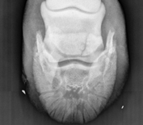

wound care
Timely and appropriate care of your hourse's wound will insure the best long-term outcome.
routine care
Click here to learn more about recommended routine care for your animal.
lameness
A common and frustrating issue. Let us help you get your horse back to work.

medicine
Once a proper diagnosis is made we can prescribe the proper medication.
surgery
We have top of the line equipoment and facilities tin order to treat your animal

reproduction services
Including breeding by artificial insemination, ultrasound exams, uterine treatments, mare & foal care.
dentistry
Teeth affect so much of the overall health of your animal and should be checked annually.

pre-purchase exams
Avoid problems down the road by getting that horse checked out first!
educatain seminars
The more you learn, the better prepared you are to keep your animal in top condition.

diagnostic imaging
In-house digital radiography, digital ultrasound, and endoscopy are powerful tools for determining the right
diagnosis and appropriate treatment.